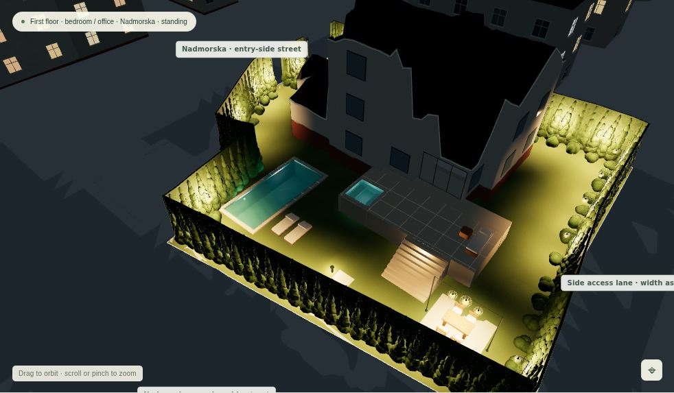
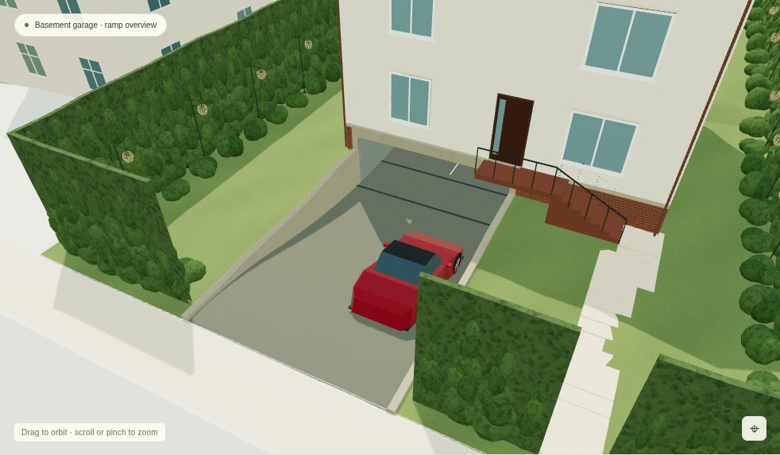
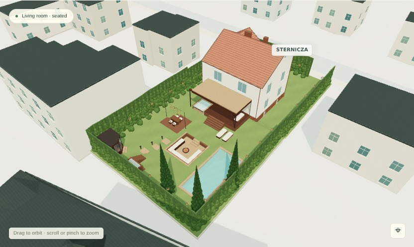
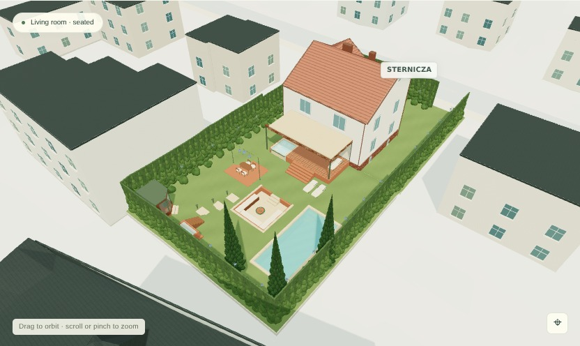
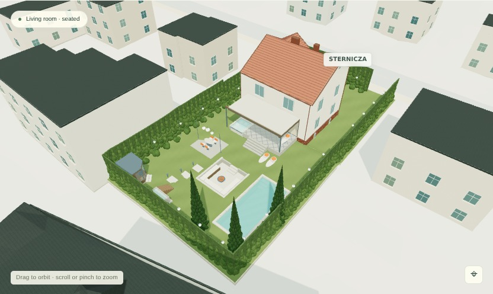
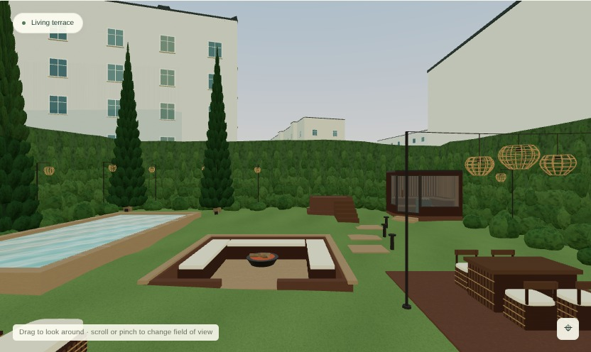
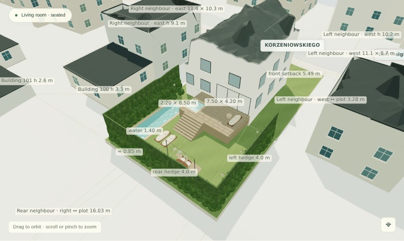
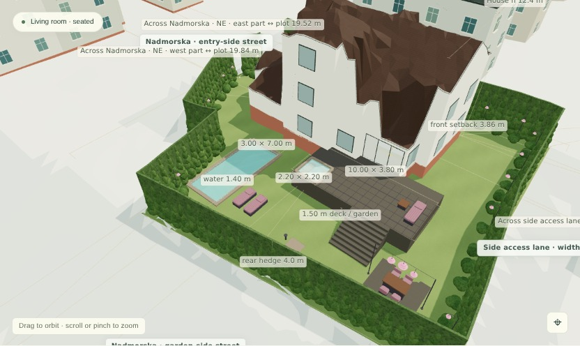
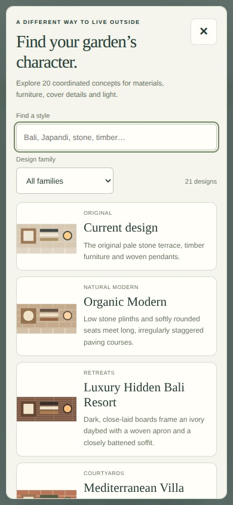
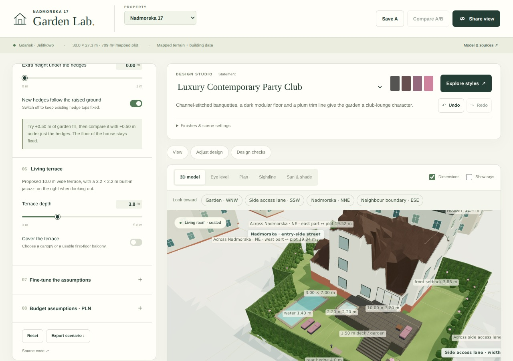

Garden Studio 1.24.0
Twenty design concepts across three mapped properties, a more efficient renderer, and clearer physical design checks. This record preserves the test results and actual WebGL captures of the released source.
Open Garden LabReview the changeAll three browser suites passed on the tested code commit below. They cover actual WebGL, the design catalogue and state history, existing night lighting and privacy controls, all three properties, and the terrace, balcony, pool-eye and two-car garage workflows.
Tested source: 717424b745b443777bd8571e65cc56b592b22fb6
Main source: 1eb75de46c560e012218f876c7a99674c62bce84
GitHub Actions run · Release summary JSON
Browser verification
Chromium rendered the scenes through its SwiftShader WebGL backend. Mobile layouts use 390 px and 320 px viewport emulation; these are not benchmarks of particular phones. A separate cloud-browser review used the SVG fallback for interface inspection.
Design studio, rendering and mobile · 11 workflow checks passed
Complete machine-readable report
- All 21 choices are accessible through select, search, family filter and Escape focus return
- Automatic and Eco bound resolution and shadow texture size
- All 20 styles render on Sternicza, fixed-camera daylight scenes differ, resources return near baseline
- Keyboard selection, explicit house finish scope, incremental unquoted costs and undo/redo preserve the view and solar time
- Share link, reload and JSON export recover the site, lighting time, house finish scope and quality
- A 20,000 PLN incremental finish quote clears on a change of scheme and Undo restores its original scope
- Save A and return to B preserve the intermediate real design as the Undo target
- Same solar time, orbit mode and viewport size do not refit the shadow camera
- Reduced motion, diagram/offscreen pauses and synthetic visibilitychange after headless foreground freeze
- 390 px and 320 px editor and scrollable catalogue fit all 21 choices
- Both additional properties visibly apply their own physical layout, selected concept and exported checks
Lighting, privacy and property workflows · 35 workflow checks passed
Complete machine-readable report
- Built application loads with a real WebGL canvas
- Optional basement garage starts off and creates a visibly different WebGL excavation and open entrance when enabled
- Full front-yard-only, raised-basement and deeper-floor options show distinct conservative clearance results
- Car position and reverse preview change actual WebGL and the equal-scale profile without changing full-drive minima
- Garage dimensions and preview direction survive scenario A/B, normal reload and Share reload
- The garage profile and clearance results remain readable at 390px without horizontal overflow
- Garage state stays isolated to Sternicza and the browser check restores the original garage-off design
- All eight upper-floor presets enter eye mode with correct direction, posture and readout
- Editable first and attic floor heights update the actual observer readout
- Night preview and both independent lighting switches work
- All three dimmers respond, including an actual rendered change from 0% to 100% active windows
- Daylight restores the sun clock and turns simulated artificial lights off
- Upper-floor preset, eye mode and night time survive a normal page reload
- The visible Share view action creates a reloadable upper-floor night view
- Mobile layout at 390px retains all eight upper viewpoints without horizontal page overflow
- Spa screening improves the visible PCK3 result and a reduced service gap shows a layout warning
- Switching established pergola foliage off reduces the actual terrace screening result
- Combined Plan displays the finite pergola, two planted sides and both spa screen panels
- Combined screening survives Share and reload in the actual WebGL orbit scene
- The property selector exposes all three independently named properties
- Switching to Korzeniowskiego preserves its own floor height and upstairs view
- Sternicza privacy comparisons and quotes stay hidden on the other two properties
- Nadmorska WebGL load uses its own plot, floor and final LiDAR roof evidence
- Nadmorska first-floor street control points +90 degrees and shares that exact direction
- The busier 70% evening visibly lights more neighbouring windows than 35% in the same WebGL street view
- Nadmorska window activity, independent light switches and visible WebGL water glow work after dark
- Garden pendants and thuja lanterns each brighten the actual WebGL scene independently of landscape accents
- Garden master switches both hanging-light channels off while retaining their settings and neighbouring windows
- Pendant switches and dimmers survive Share and reload without changing the property or garden layout
- Isolated hedge lanterns light foliage and ground by formerly unlit fixtures, respond to the dimmer and restore all channels
- At 25% and 85%, isolated hedge lanterns leave three exterior ground patches beyond the plot effectively unchanged
- Nadmorska whole-plot plan shows 709.29 square metres, pool sizes and both side access openings
- Nadmorska plot, property selector and eight upstairs controls fit a 390px mobile page
- The 390px mobile night scene renders all active hedge lighting and visibly responds to its switch in WebGL
- No unhandled JavaScript or browser console errors
Terrace, balcony, pool eye and two-car garage · 8 workflow checks passed
Complete machine-readable report
- Fresh defaults use a 4 m terrace, infinity jacuzzi and 3 m high / 4 m deep canopy; basement remains optional
- Two-car entrance, separated vehicle envelopes and the over-ramp landing appear in real WebGL and exported clearance checks
- A narrow two-car setting is explicitly rejected rather than shown as a valid fit
- Balcony replaces the canopy in the rendered scene and exposes a first-floor viewpoint and proposed guarded deck
- Swimming view uses the actual pool water level and its editable eye offset visibly moves the camera
- Balcony, pool viewpoint and two-car dimensions survive sharing and reload
- A v22 shared design retains its single-car garage and old terrace/cover defaults
- The double-garage plan, result and cover controls fit a 390 px viewport without page overflow
Hidden-document motion check: synthetic visibilitychange after headless foreground freeze. The report states whether the browser supplied a native visibility transition or whether the headless test dispatched the equivalent visibility event. No native background-tab result is inferred from a synthetic event.
Scene structure and resource use
| Property | Previous terrain vertices | Current vertices | Reduction |
|---|---|---|---|
| Sternicza 11 | 118,893 | 21,012 | 82.3% |
| Korzeniowskiego 40 | 31,848 | 5,949 | 81.3% |
| Nadmorska 17 | 67,524 | 12,116 | 82.1% |
Interior terrain triangles retain their coordinates; new clipped triangles meet the actual parcel edge. The mesh and resource measurements are structural counts, not a frame-rate claim. The studio report also records the browser's drawing buffers, draw calls, triangles and resource counts while switching styles.
Actual rendered examples
The following are JPEG copies of browser captures of the simulator. They are procedural planning visuals, not generated photographs. The catalogue image presents material boards; the property images show those selections applied to the actual mapped model.




















Research and physical interpretation
Style precedents and Gdańsk exposure · Site dimensions and physical audit · Rendering study and methodology · Release implementation notes
The proposed Cyberster ramp is a straight quasi-static envelope check. It does not resolve street turning, actual threshold and drainage geometry, dynamic suspension movement, open scissor doors or the existing structure. Parcel boundaries and coarse terrain carry their recorded evidence limits. At Nadmorska the sewer route still requires registration and location. Lighting is a visual approximation, with no lux or glare certification; water motion changes surface detail rather than physical water elevation.